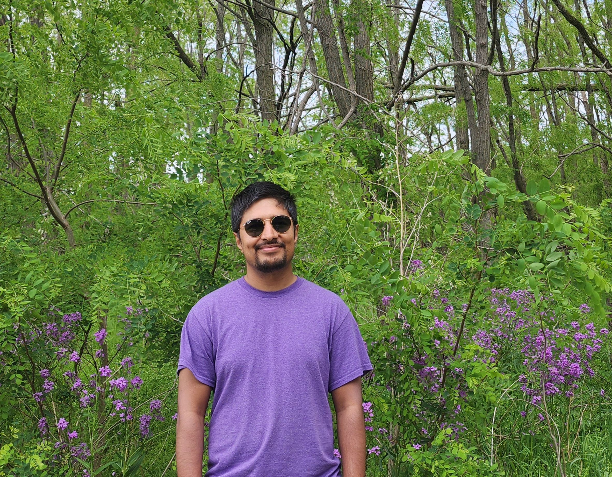

How do we model risk?
Bayesian updating, system identification, and fragility models that learn from sparse and imperfect data.
Structural engineering · Omaha, Nebraska
I am a Ph.D. researcher studying how buildings and communities can withstand, adapt to, and recover from natural hazards.

01 / A little context
My work sits at the intersection of structural engineering, probabilistic modeling, and community resilience. I use data, simulation, and field evidence to understand what happens when hazards meet the places people call home.
At the Durham School of Architectural Engineering and Construction, I am exploring practical ways to make resilience models more accurate, more transparent, and more useful for decision-makers.
02 / What I study
From the first measurement to the final decision, I am interested in the full chain of how engineering knowledge becomes community safety.
Bayesian updating, system identification, and fragility models that learn from sparse and imperfect data.
Measuring the resilience of buildings and neighborhoods after tornadoes and other extreme events.
Turning uncertainty into clear, defensible choices for safer and more sustainable infrastructure.
03 / Selected work
Recent and representative work across natural hazards, sustainability, and structural reliability.
See the full CV04 / Say hello